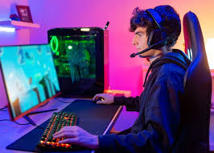

Desde hace mucho tiempo se han utilizado los juegos, simulaciones y simulaciones-juegos para propiciar la socialización de los individuos por medio de objetos y acciones que representan una situación y que permiten un nuevo aprendizaje, en investigaciones educativas y en el campo instruccional, pero su potencial no ha sido explorado en todas las áreas y niveles del conocimiento, con ellos se potencia el aprender a cooperar, compartir y conectarse con los otros, a preocuparse por los sentimientos de los demás y trabajar para superarse progresivamente.
